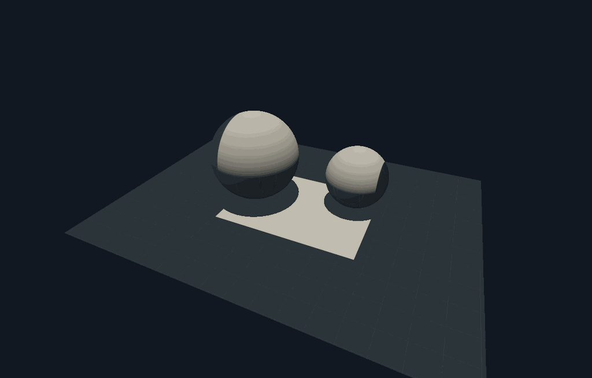
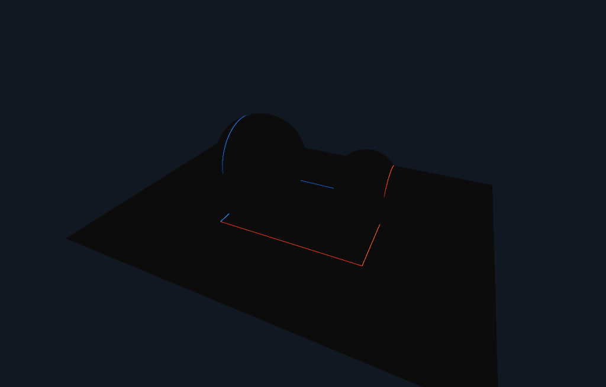
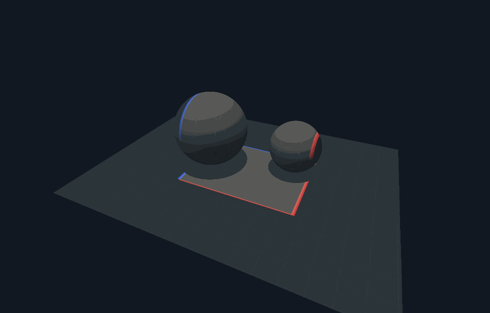
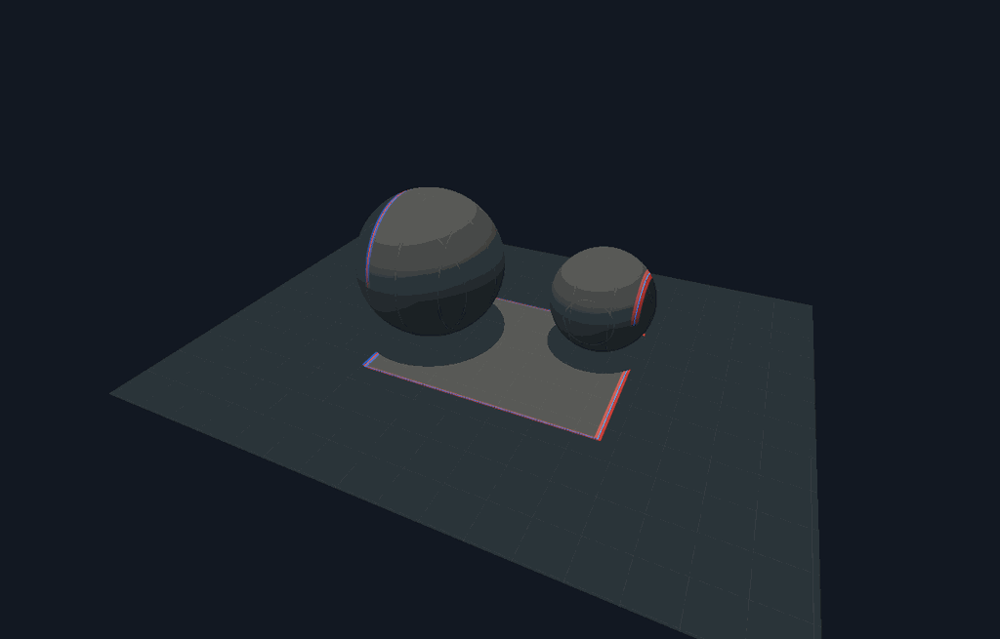

The new Sharp boundary derivative tab is an additive, isolated radiometric experiment. It does not replace the legacy finite-edge-kernel study or the current-scene Light-position differential mode.
A downward collimated quad illuminates a Lambertian floor and two spheres. Camera rays intersect the actual surfaces; upward rays test receiver shadows. The uniform incident irradiance is projected by the receiver cosine and multiplied by albedo / pi. The source translates along an editable vector. Red is positive change, blue is negative; the original illumination can appear beneath it at a separate dimming level.
Why the older image had width
Three different quantities were visually conflated:
- In
OpticsExperiments.h, the legacySurfaceConfig::bluris a world-space smoothing kernel. The UI clamps it to 0.015–0.3. ItsThin sheetalso sets source half-width toblur * 0.5, so it never displays a zero-width sheet. - A central finite difference moves the emitter to
X ± epsilon. Its change is distributed across a finite displacement band, even for a sharp source. - A physical film integrates light over pixels. A mathematical zero-width line can contribute finite energy to a finite film pixel. The displayed line can also grow when that image is enlarged in the UI.
The new analytic image has no world-space blur, finite difference band, or arbitrary line-thickness setting. It integrates the sharp boundary measure over the film pixel. Finite epsilon affects only the comparison image.
Boundary formula and normalization
For a collimated source, let (u,v) be the receiver point projected into the
emitter plane. Let the source support be [l,r] × [b,f]. With translation
velocity (a,0,c) and fixed receiver response K,
An X-only translation activates two extruded planes. General in-plane translation activates up to four edges. Their intersections with a plane are lines; intersections with a sphere are curves. Translation parallel to the collimated rays changes neither support nor steady irradiance here, so the Y component correctly gives zero. That statement would change for attenuation, finite propagation-time measurements, varying emission, or a different source.
For each film pixel, (u,v) is approximated as affine in screen coordinates using
the actual receiver tangent. The baseline is the pixel-square area clipped by the
four emitter half-planes. The analytic derivative integrates each boundary line
through that square. The line's weight is its clipped length divided by
|grad_screen u| (or |grad_screen v|), the coarea factor. This division is what
makes the boundary energy correct when the camera, receiver tilt or resolution
changes. It is not a line drawn at a chosen cosmetic thickness.
Central differences evaluate the same clipped baseline at ±epsilon and
±epsilon/2. The UI reports their relative L2 error against the analytic
derivative. Raw exports retain signed radiance derivatives; tone mapping and
display gain do not change those values.
Deliberate scope
This demonstrates the derivative of sharp support with fixed transport. The beam direction, source irradiance, receiver response and visibility remain fixed while the source aperture translates. No autodiff is necessary for this case. Source and image boundary events are handled by the boundary integral.
It is not a general derivative of diffuse area lighting, moving occluders, specular paths, indirect illumination, medium attenuation or changing material parameters. Such cases also differentiate smooth transport and/or visibility. Curved receiver coordinates use a local affine approximation per pixel, and silhouettes and visibility discontinuities are center-sampled rather than fully filtered. Refining the film reduces the tangent approximation, but the FD comparison alone validates only the derivative of this declared pixel model.
Validation
tests/test_boundary_derivative.cpp checks:
- independent dense subpixel quadrature against clipped pixel area;
- signed coarea boundary weights against independently displaced polygon area;
- conservation of integrated boundary energy when a pixel is subdivided;
- the zero derivative for vertical collimated-source movement;
- shadow geometry and actual signed curves on both planar and spherical receivers;
- finite-difference convergence on the complete rendered receiver image.
Passing an output folder to the test exports original, signed, finite-difference and residual images plus numeric convergence measurements. The live tab exports the same images and a per-pixel CSV with radiance, analytic derivative and both finite-difference estimates.
For the default two-sphere/floor scene at 360 × 230 pixels, translation vector
(1, 0, 0.35), the measured relative L2 errors against the sharp analytic image
were:
| Central-difference epsilon | Relative L2 error |
|---|---|
| 0.030 | 69.3310% |
| 0.015 | 40.0734% |
| 0.001 | 1.4268% |
The initially large error is expected: a finite displacement distributes the change over a band wider than a film pixel, while the analytic image concentrates it at the boundary. These values establish convergence of the declared image model, not a performance comparison against the general scene integrators.
Native receiver images
These display captures are 1200 × 768 pixels and use the same native pixel model as the interactive tab. The convergence table above uses its separately declared 360 × 230 test film. Red means added radiance and blue means removed radiance; the display gain does not change the raw signed derivative.




